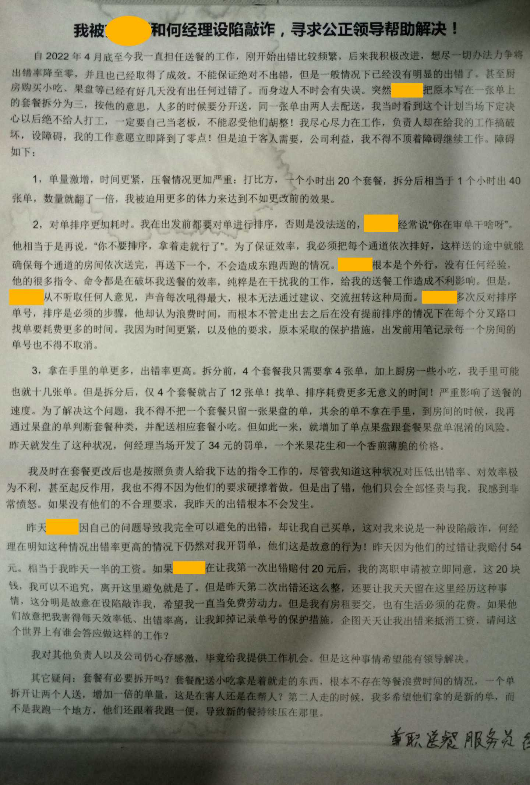
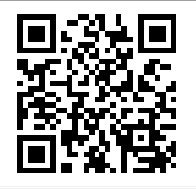

注：电脑端可以立即播放，手机端按播放要加载等待20秒左右。
本来是对于他们不合理罚款的维权，50多块对我来说也不是地上捡的，也是通过一趟趟跑为客人服务劳动换来的。他们胡作非为，瞎搞破坏，肆意处罚， 而他们自己却不承担任何责任！这种行为本身就是严重不合理的！他们冤枉我时，我没有骂人；他们的过错干扰我的工作，我也没有骂人；一些厨房员工素质极差，天天以毫无礼貌教养的语气跟我说话， 我也没有骂人，虽然有一次发了脾气，但是我也说的是“我是来为客人服务的，我要把客人的利益放在首位”。但是我不骂人，就要维护我自己的权益。这直接让何超乙对我肆意人身攻击辱骂， 他先说了一句“你已经离职了！”然后就开始大声用脏话骂人。对于此种凶恶之徒，肆意人身侮辱，人身攻击，无法无天的法盲恶人，本人坚决无法容忍！绝不可能妥协！势必揭发曝光到底！对待恶人必须零容忍！
关于我2022年6月6日晚上写举报材料的内容：

我此次网络公开举报揭发何超乙肆意实施人身攻击、人格侮辱的恶行与50多块工资无关，也与我反映的其他负责人存在不合理指挥、要求无关，谁骂人的，这里就针对谁！ 如果我没有考虑到公司利益，如果我没有考虑到其他负责人的利益我完全可以像何超乙那样“你已经离职了”，然后就可以大胆的揭发举报公司的问题。 但是，为了把何超乙个人的问题与公司分开，我将在以后所有的追责、曝光、维权的材料和诉求中仅针对何超乙这个个体对象！只要公司不包庇、不帮他作恶， 不帮他来共同攻击我，我仍然将公司视作无关对象，会在尽可能不影响公司的的情况下讨还公道，惩治恶徒！2022-0630 22:36
补充：本页地址二维码：
